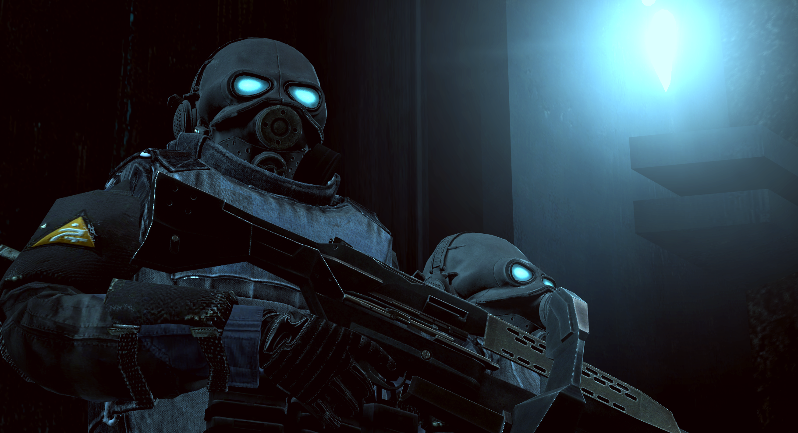

Força Tática Transhumana
A Força Tática Transhumana é a força militar humana do Império. Raramente vista, mas pronta para mobilizar-se a qualquer momento, esta força de elite de soldados modificados existe para suprimir ameaças à estabilidade regional com uma eficiência calculada e brutal.
Regras
A menos que seja indicado o contrário, todas as regras e procedimentos da Guarda Civil Metropolitana são transferidos para a Força Tática Transhumana. A infração de qualquer uma destas regras resultará numa potencial remoção de ambas facções e em banimento do servidor.
0. Use o bom senso. O abuso claro da whitelist ou qualquer tipo de confusão resultará num banimento permanente.
1. Você é um ativo militar treinado e melhorado, mais soldado do que humano, e cuja única existência é a preservação do status quo do Império. As tuas ações, palavras e atitudes devem refletir isso, ou será removido.
2. Não há disciplina interna para os soldados transhumanos. Se fizer merda, será removido da fação. Da mesma forma, se não concordar com o que o teu Líder de Equipe diz, guarde isso para você.
3. Não se intrometa nos assuntos da Guarda Civil Metropolitana, a não ser que esteja cumprindo uma ordem da Central ou do comando local da Vigilância.
Conduta
| Forças da Vigilância |
| Força Tática Transhumana |
|  |
| Uma força militar ciberneticamente melhorada e cognitivamente substituída, mobilizada para preservar a integridade urbana quando todos os outros falham. |
Esta facção é reservada para aqueles que conseguem manter uma presença séria e intimidante quando estão à vista do público; lembrem-se que a Força Tática Transhumana é a força terrestre mais organizada e disciplinada da Vigilância.
Os soldados transhumanos usam terminologia verbal no rádio em vez de códigos 10. Siga os seus padrões de discurso tal como apresentados no universo de Half-Life 2, especialmente quando interagir com os cidadãos, onde o uso de palavras mínimas e a manutenção de ordens clínicas e sucintas ajudam a distanciar os soldados da força laboral. Muitas vezes, menos palavras falam mais alto.
Mobilização
Os soldados transhumanos são muito mais imponentes quando existem como uma força raramente vista até que a situação se torne terrível. Como tal, existem diretrizes muito rigorosas sobre quando é que os jogadores podem “entrar” em seus personagens transhumanos.
Os soldados podem aplicar uma amputação imediata sumária aos infratores com NÍVEL DE ATIVIDADE ANTICÍVICA CINCO ou superior durante estes períodos, desde que isso não contradiga as regras da facção.
Qualquer mobilização deve ser feita num grupo de pelo menos 2 unidades transhumanas e de acordo com as diretivas listadas abaixo. Para além disso, as unidades não devem exceder a tabela de máximos (à direita) em nenhum momento.
Ativos Prioritários
Os membros do Conselho de Segurança da Cidade 11 devem ocasionalmente dialogar com a população em geral. Como soldado transhumano, faz parte do seu dever preservar a posição deles durante essas excursões, o que inclui:
- Constantemente armado e pronto a defender ou a entrar na linha de fogo do ativo prioritário
- Em situações em que o ativo prioritário está em risco indevido, é perfeitamente adequado ignorar as ordens que poderiam comprometer ainda mais a sua segurança em favor da sua deslocação para um local seguro.
- Manter-se vigilante e planejar com antecedência as potenciais vias de saída ou fontes de ataque
- Manter os membros da força laboral suprimidos ou à distância do ativo
- Os cidadãos que não cumprirem uma ordem de afastamento devem ser amputados da força laboral
| Índice de estabilização | Máximo de soldados |
| PRESERVADO | 2 |
| MARGINAL | 2 |
| FRATURADO | 4 |
| ISENÇÃO DE JULGAMENTO | N/A |
Estabilização
Os soldados transhumanos podem ser mobilizados para estabilizar a insurreição local em todo o distrito quando o Índice de Estabilização Política for FRATURADO ou mais grave.
Isto pode implicar uma busca sistemática e a inoculação do sistema de drenagem (esgoto) apenas em uma ISENÇÃO DE JULGAMENTO.